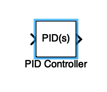
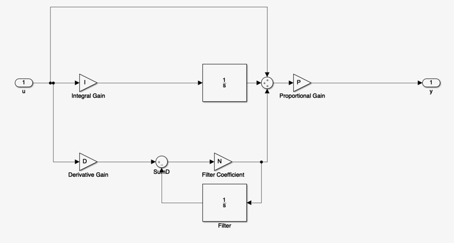
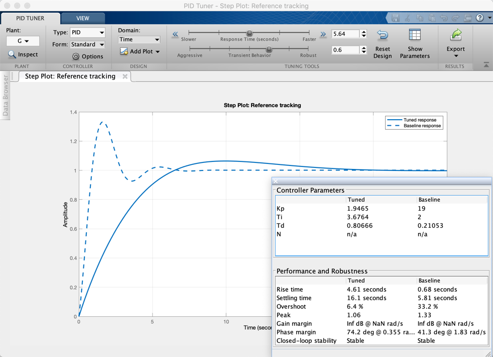

This section is yet to be written. In the meantime, please review this detailed tutorial from the Control Systems Tutorial in MATLAB and Simulink.
MATLAB has introduced a PID block that can be used either from the command-line or within Simulink. The benefit of this block is that it can be used to autotune the PID compensator parameters in-loop.

The continuous-time PID block is to be found in the Continuous Systems library in Simulink. The block diagram is as shown below.

The transfer function of the PID is
$$D_\mathrm{PID} = P\left(1 + I\frac{1}{s} + D \frac{N}{1 + N\frac{1}{s}}\right)$$which reduces to
$$D_\mathrm{PID} = P\left(1 + I\frac{1}{s} + D \frac{sN}{s + N}\right)$$By comparison with the standard PID
$$D_\mathrm{PID}(s) = K_{\rm{prop}}\left(1 + T_Ds + 1/\left( T_I s\right)\right)$$where $$P = K_\mathrm{prop}$$
$$T_D = ND$$$$T_I = 1/I$$There is an extra pole at $s = -N$ which is there to limit the high-frequency gain of the Proportional+Derivative term.
In addition to the pole at the origin which is introduced by the integral term, The MATLAB PID has a proportional gain, two zeros, and an additional pole. Thus there are four parameters which can be adjusted to give a range of possible structures.
Let us repeat the previous example (See 4.2 Manual Tuning).
Here we have:
$$G(s) = \frac{1}{5s^2 + 6s + 1}$$and we ended up with
$$D_{\mathrm{PID}}= K_{\mathrm{prop}} \left(1 + T_D s + \frac{1}{T_s} \right)$$with $K_{\mathrm{prop}} = 19$, $T_D = 4/19$, $T_I = 2$.
Setting the PID with the equivalent values
P = 19; D = 4/19; I = 2;
D = pidstd(P, I, D)
In MATLAB we use
s = tf('s');
G = 1/(5*s^2 + 6*s + 1)
Go = series(D,G)
Gc = feedback(Go,1)
step(Gc)
We can now use this design as a baseline for autotuning the PID
pidTuner(G,D)
Results are:
